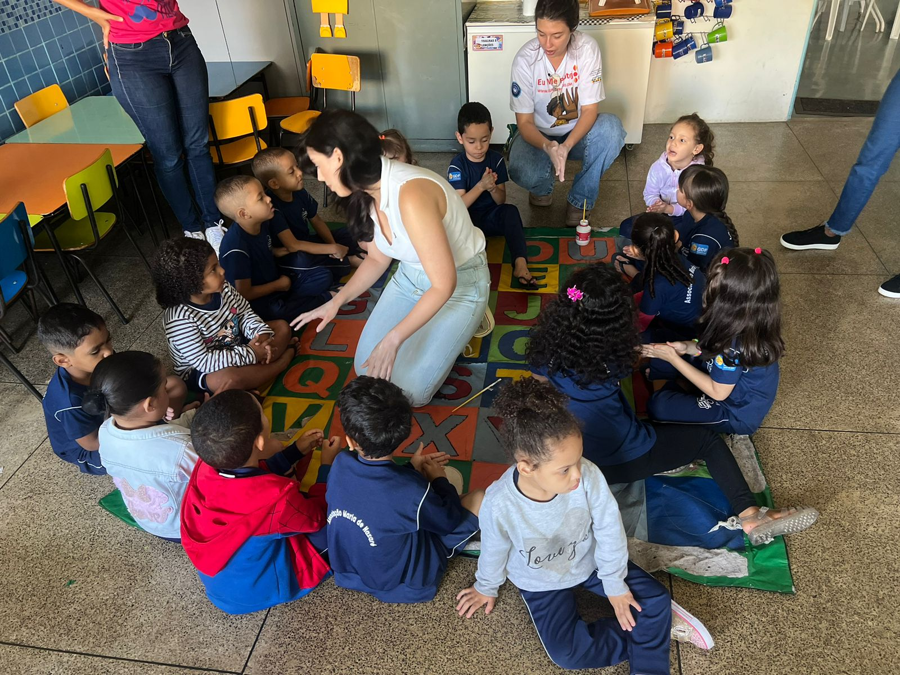

Decorrer do Projeto

Higiene das Mãos
Aqui usamos tinta pra simular sabão e ensinamos a lavar as maõzinhas.
Higiene das Mãos
Finalizando o dia de higiene das mãos com os pequenos.
Higiene Corporal
Ensinamos os pequenos a como usar produtos de higiene pessoal do dia a dia usando uma atividade lúdica de caixa surpresa.

Cuidado com o Piolho
Aqui usamos da música para ensinar sobre o cuidado com os piolhos.
Cuidado com o Piolho
Neste dia fizemos um teatro de fantoches para ensinar para todas as crianças em conjunto sobre os piolhos.

Cuidado com o Piolho
Ensinando a músiquinha para as crianças.